Descrição curta
Caixa de Ronrons é um jogo idle e incremental de gatinhos em pixel art para Windows. Colecione companheiros, acumule ronrons, melhore sua salinha e leve os gatos para a área de trabalho no modo mascote.
IMPRENSA & CRIADORES DE CONTEÚDO
Vai falar sobre Caixa de Ronrons? Aqui estão os textos, as imagens e os vídeos para ajudar a contar essa história.
Textos em PT, EN e ES, logos, artes e capturas em resolução original. Vídeos disponíveis separadamente abaixo. ZIP · 28.9 MB
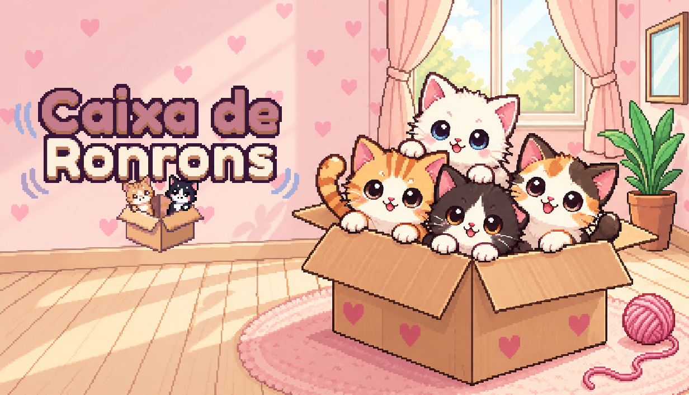
O JOGO, EM POUCAS PALAVRAS
Caixa de Ronrons é um jogo idle e incremental de gatinhos em pixel art para Windows. Colecione companheiros, acumule ronrons, melhore sua salinha e leve os gatos para a área de trabalho no modo mascote.
Uma simples caixa de papelão é o começo de um lar cheio de gatinhos. Em Caixa de Ronrons, você ganha ronrons com cliques e com a produção dos gatos, recebe novos companheiros e investe em melhorias para expandir sua coleção. Entre uma descoberta e outra, pode atender pedidos dos gatinhos, completar tarefas do diário e guardar momentos no álbum de lembranças. O jogo também oferece o Jogo da Memória, a Corrida do Laranjinha, o Gatominado e um timer Pomodoro para alternar foco e descanso. No modo mascote, os gatos acompanham sua rotina em uma faixa na área de trabalho, com acesso às funções do jogo por um menu compacto.
Informações verificadas em 13/10/2026.
DIRETO DO JOGO
Capturas reais, sem molduras de divulgação. O ZIP reúne 13 capturas em português e 13 em inglês.
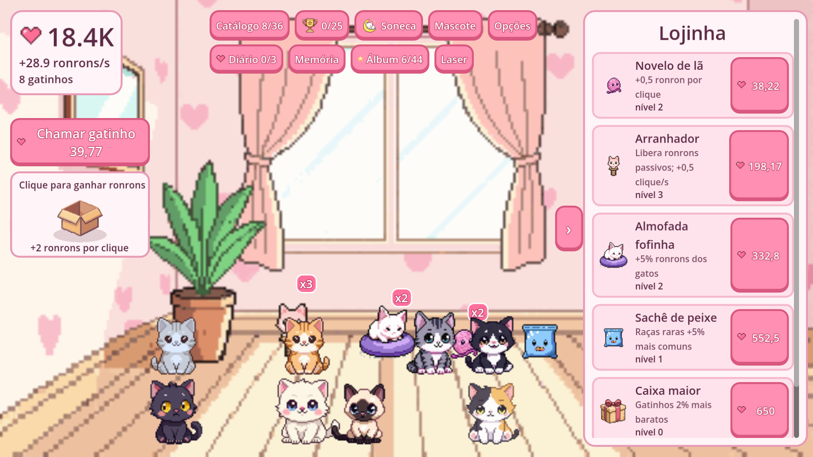
1920 × 1080 · Interface em português
Baixar PNG original ↓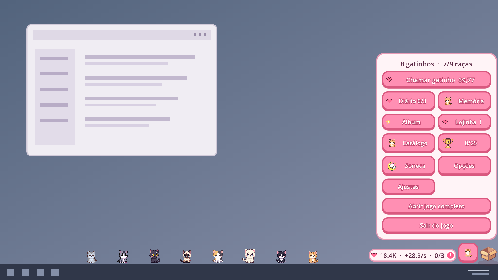
1920 × 1080 · Interface em português
Baixar PNG original ↓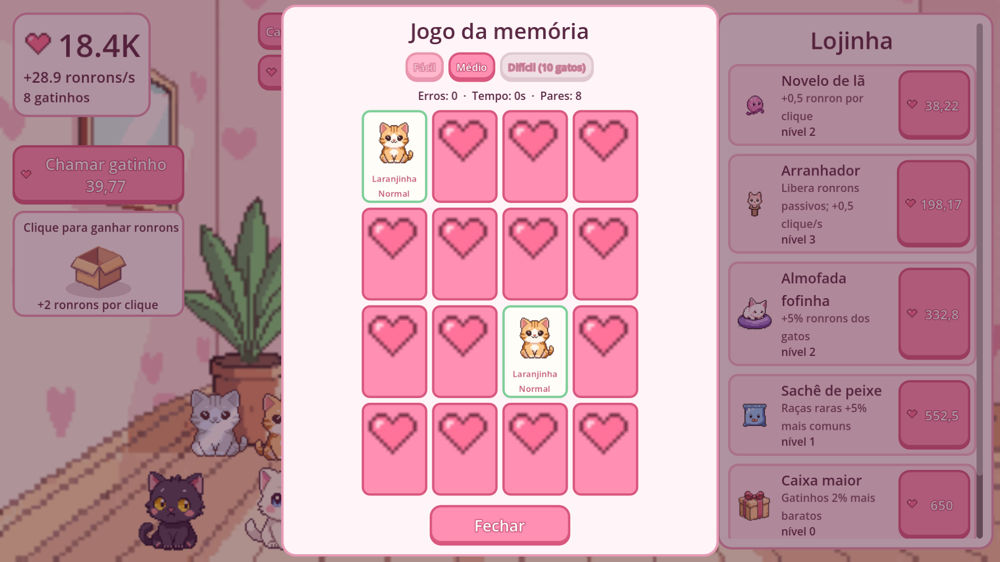
1920 × 1080 · Interface em português
Baixar PNG original ↓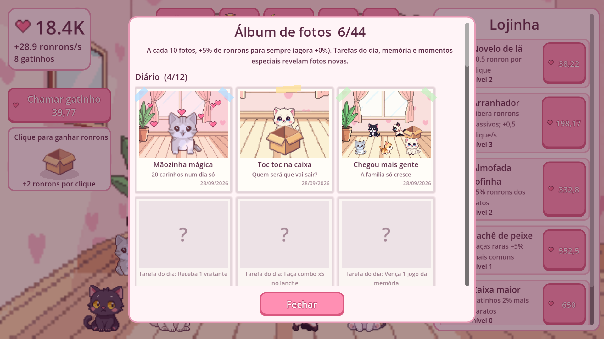
1920 × 1080 · Interface em português
Baixar PNG original ↓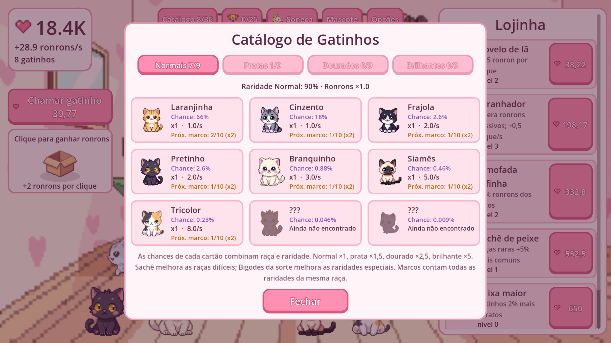
1920 × 1080 · Interface em português
Baixar PNG original ↓IDENTIDADE DO JOGO
Logos com fundo transparente e artes promocionais já preparadas para a Steam. Preserve as proporções ao usar.
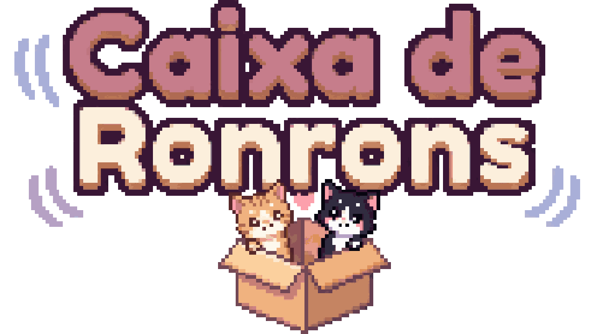
PNG · fundo transparente
Baixar PNG original ↓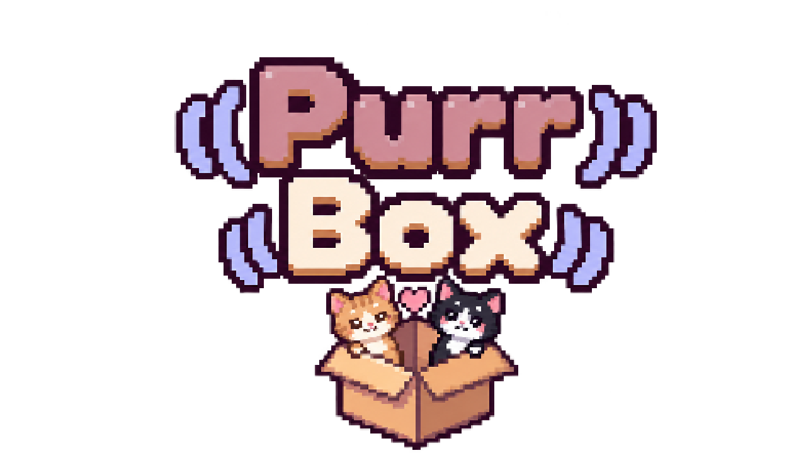
PNG · fundo transparente
Baixar PNG original ↓
PNG · 1536 × 1024
Baixar PNG original ↓PNG · 1232 × 706
Baixar PNG original ↓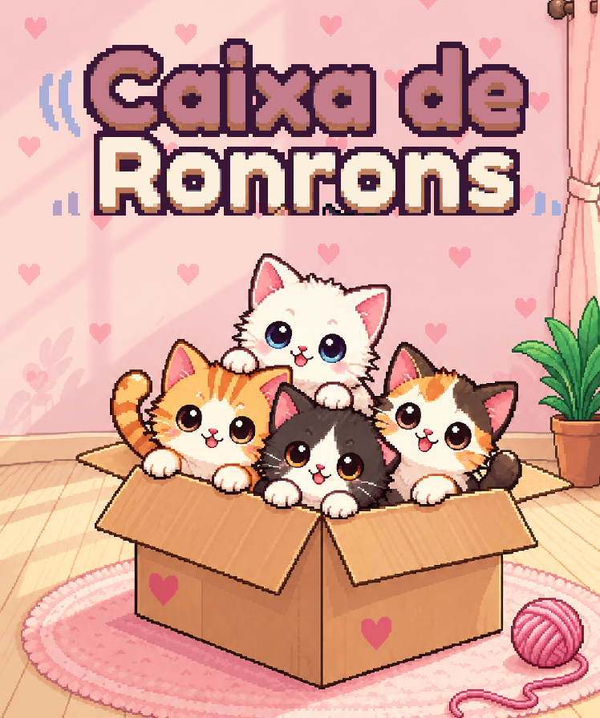
PNG · 748 × 896
Baixar PNG original ↓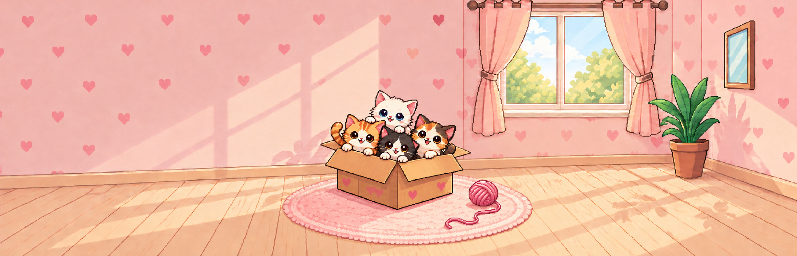
PNG · 3840 × 1240
Baixar PNG original ↓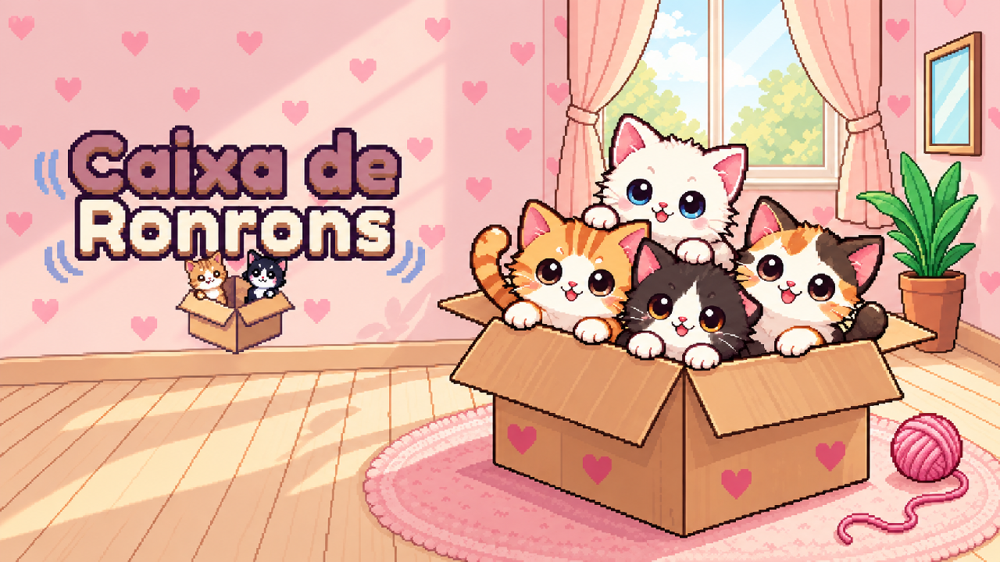
PNG · 1280 × 720
Baixar PNG original ↓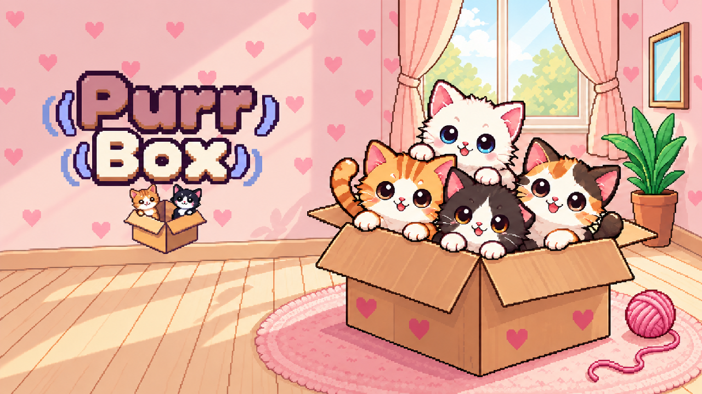
PNG · 1280 × 720
Baixar PNG original ↓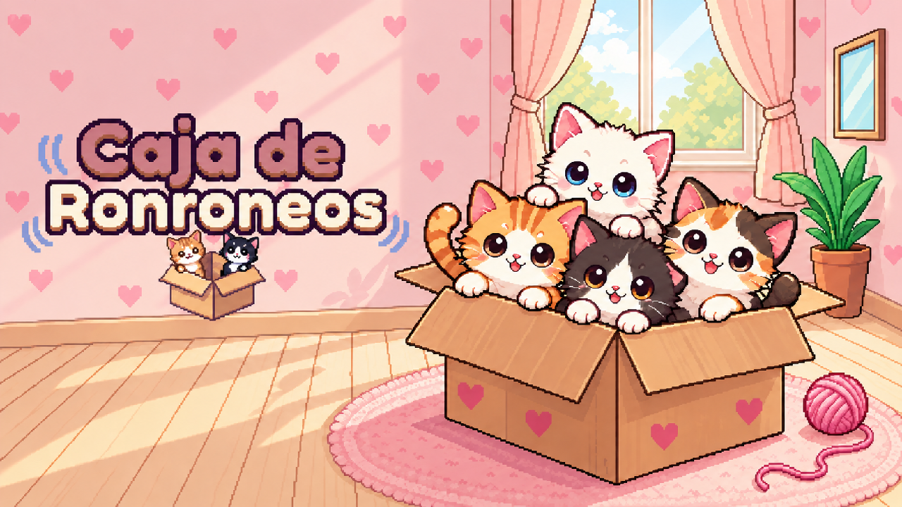
PNG · 1280 × 720
Baixar PNG original ↓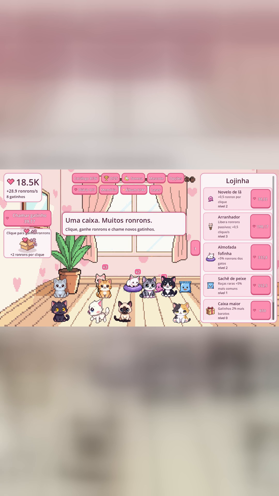
PNG · 1080 × 1920
Baixar PNG original ↓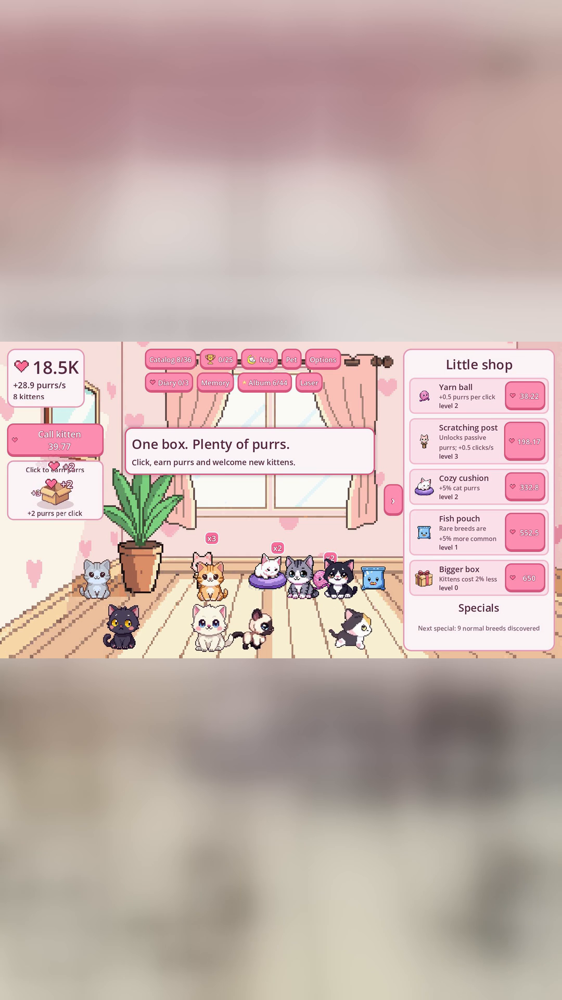
PNG · 1080 × 1920
Baixar PNG original ↓O JOGO EM MOVIMENTO
Assista ao trailer ou baixe o MP4 para sua cobertura. Há versões em português, inglês e espanhol.
Contato
Para entrevistas, dúvidas ou pedidos relacionados à divulgação do jogo, fale com o desenvolvedor.
Use estes materiais para apresentar o jogo em notícias, vídeos, streams e eventos. Ao identificar o projeto, use Caixa de Ronrons (Purr Box) e inclua um link para o site ou uma das lojas. As artes promocionais estão separadas das capturas reais do jogo.